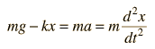
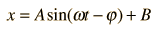
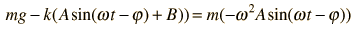
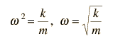

A mass on a spring has a single resonant frequency determined by its spring constant k and the mass m. Using Hooke's law and neglecting damping and the mass of the spring, Newton's second law gives the equation of motion:

The solution to this differential equation is of the form:

which when substituted into the motion equation gives:

Collecting terms gives B=mg/k, which is just the stretch of the spring by the weight, and the expression for the resonant vibrational frequency:

This kind of motion is called simple harmonic motion and the system a simple harmonic oscillator.
|